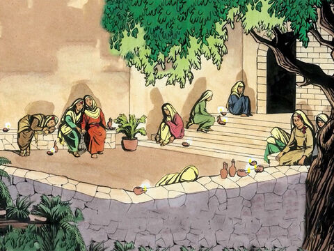

The Parable Of The Ten Virgins
Then shall the kingdom of heaven be likened unto ten virgins, which took their lamps, and went forth to meet the bridegroom.
And five of them were wise, and five were foolish.
They that were foolish took their lamps, and took no oil with them:
But the wise took oil in their vessels with their lamps.
While the bridegroom tarried, they all slumbered and slept.
And at midnight there was a cry made, Behold, the bridegroom cometh; go ye out to meet him.
Then all those virgins arose, and trimmed their lamps.
And the foolish said unto the wise, Give us of your oil; for our lamps are gone out.
But the wise answered, saying, Not so; lest there be not enough for us and you: but go ye rather to them that sell, and buy for yourselves.
And while they went to buy, the bridegroom came; and they that were ready went in with him to the marriage: and the door was shut.
Afterward came also the other virgins, saying, Lord, Lord, open to us.
But he answered and said, Verily I say unto you, I know you not.
Watch therefore, for ye know neither the day nor the hour wherein the Son of man cometh.
Matthew 25:1-13
- 